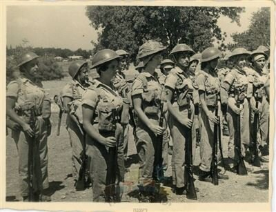

-
About me
photos
playlist
like
QrCode
Q@A
contact me
הדרך להיות אחות- סיפורה של אסתר טבק
שמי אסתר טבק, אני אספר את עיקר סיפור חיי- אתמקד באיך הפכתי להיות אחות.
ראשית אספר על משפחתי
אמי הגיעה לארץ מסוריה ואבי הגיע מברזיל לביקור בארץ ומפני שהוא הגיע בתקופת מלחמת העולם השניה,
הדרכים בעולם נסגרו והוא נאלץ להשאר בארץ. כך הוא ואמי הכירו ולימים התחתנו.
אני הבכורה, שנה לאחר מכן נולדה אחותי יפה ושנתים לאחר מכן אחותי הנוספת נינה.
כשהייתי בת 4 אבי נפטר, בגיל 36 והשאיר אותנו יתומות מאב.
אמי הייתה אז בגיל 24, היא הייתה אלמנה בגיל צעיר מאוד עם 3 ילדות קטנות.
אמא הייתה צריכה לעבוד ולפרנס אותנו ועל כן לא יכולנו להישאר בבית ופיזרו אותנו למסגרות שונות.
אני הלכתי למעון גאולה- כבר בגיל 5. זה לא היה פשוט אך לאורך כל הדרך הרגשנו שאמא מסורה ודואגת לנו,
היא באה לבקר אותנו כל שישי ובכסף שהיה לה קנתה לנו גזוז ועוגה.
לימים עברתי לכפר הנוער ע"ש מאיר שפיה בחיפה.
שם למדנו במהלך היום ועבדנו אחרי הצהריים- עבדנו בלול, בנקיונות, בחדר האוכל ובכל מיני עבודות.
אנחנו בעצם תחזקנו את המקום! בנוסף- היתה לנו תרבות ענפה שם- היו חוגים, היה תאטרון ואף נגינה.
לאחר מכן סיימתי את כיתה ח' ומפני שרציתי להיות אחות, העובדת הסוציאלית שהייתה בקשר איתנו
מצאה מקום שאלך אליו ללמוד בתיכון. זה היה בעמק הירדן- קיבוץ דגניה ב'.
נערים רבים שהיו שם הגיעו לשם מטרות הגשמה ואידיאולוגיה.
אני הגעתי לשם רק כדי לסיים תיכון, כדי להגיע לבית ספר לאחיות!
בנוסף עבדתי במרפאה שם, אך בעבודות נקיון והדבר תסכל אותי מאוד
מפני שלא קידם אותי למטרה שלי- להיות אחות.
שם למדתי תיכון- למדתי מקצועות תנ"ך וספרות.
לימים התברר לי כי תעודת תיכון זו לא מסייעת לי להתקבל לבית ספר לאחיות.
הדבר תסכל אותי מאוד מפני שהוא גזל לי זמן לחינם.
אך בכל זאת לא ויתרתי על החלום, חיפשתי בית ספר אחר ללמוד בו כדי להשלים לימודי תיכון.
למדתי קיץ שלם לבחינות קבלה להתקבל לבית ספר חקלאי בת גלים. את המבחן לא צלחתי
אך בשל המוטיבציה שלי קיבלו אותי. כך סיימתי את תעודת התיכון.
בזכות תעודת התיכון- התקבלתי לבית ספר לאחיות- למדתי 3 שנים והפכתי להיות אחות כפי שרציתי תמיד.
לאחר מכן התגייסתי לצבא לשנה אחת והייתי אחות אחראית בתל השומר.
לאור השירות הצבאי שלי הגעתי לתובנה שבית חולים זה לא המקום שאוכל לתת את הלב והנשמה
בשביל החולים, כי אי אפשר לסייע להם כפי שהם זקוקים.
בעקבות מסקנה זו- המשכתי באזרחות ל"קורס לבריאות הציבור" והתמקצעתי בטיפת חלב.
ולאחר מכן הייתי בשנת שירות ב"חצור הגלילית" ושם היתי אחות אחראית ב"אם וילד".
זה הסיפור שלי על החלום שלי להיות אחות והדרך להגשמתו.
לימים התחתנתי עם משה טבק. ולנו 3 ילדים.
משה בעלי שירת כקצין בחיל הים, ועקב תפקידו
משה נשלח לשליחות לבניית ספינות הטילים במספנה בשרבורג ואנו כמובן עברנו איתו לצרפת.
התפקיד היה אתגרי גם לחיילים ששיררתו וכמו כן למשפחותיהם.
במשך שנתיים התגוררנו בצרפת.
הוא המשיך לשרת בחיל הים, ובשנת 74 הוא נשלח להיות נספח ימי לענייני ים בשגרירות ישראל בארה"ב.
אני ומשפחתי התלוונו אליך לארה"ב.
במשך שלוש שנים התגוררנו בארה"ב, היינו בקהילה הדיפלומטית בבירת ארה"ב- וושינגטון.
לאחר מכן טסנו לשליחות נוספת בארה"ב- משה היה שליח מטעם הקרן הקיימת.
לאחר החזרה מהשליחויות- הייתי אחות בבית ספר 12 שנה- בבית ספר התיכון של רעננה.
ולאחר מכן הייתי אחות אחראית של מרפאה תעסוקתית בכפר סבא עד שפרשתי לפנסיה.
עד היום אני בקשר עם האחיות שעבדנו יחד.
my photos
ביקור של האם שולמית נגרין אצל בתה אסתר בכפר הנוער ע"ש מאיר שפיה, חיפה
אסתר נגרין, לימים טבק, בסיום כיתה ח
אסתר נגרין, לימים טבק, תלמידה מתמחה בחדר ניתוח
אסתר נגרין, לימים טבק, במסדר המפקד בקורס קצינות רפואה בצריפין, סרפנד, בה"ד 12
אסתר נגרין, לימים טבק, אחות בבית החולים תל-השומר, רמת גן
אסתר נגרין, לימים טבק, ופנינה כהן - אחיות בחצור הגלילית, בשנת שירות
אסתר טבק עם בעלה משה טבק
my playlist
סרטון של אסתר טבק מספרת על בעלה אל"מ משה טסק בשרבורג
like like like
QR scan

Q @ A
שלושה הבדלים
כמות האנשים: ב-1 היו מליון משתמשים, ב-2 בליון משתמשים וב-3 טריליון משתמשים
מי כתב את המידע? ב-1 בעלי האינטרנט, ב-2 בעלי דפי האינטרנט ומידע שניתן על ידי משתמשים אחרים ברשת האינטרנט וב-3 האינטרנט מספר מידע על ניתוחים שונים ועיבוד המידע שקיים בו
אינטרקציה של המשמתמש: ב-1 יכל לקרוא בלבד, ב-2 לקרוא ולכתוב- ניתן לראות כי אנשים מפרסמים תוכך שאחרים יכולים לצרוך, ב-3 לקרוא ולכתוב באופן חכם כלומר
משתמשים בונים אפליקציות שאחרים יכולים להשתמש בהם, חברות בונות פלטפורמות שמאפשרות פרסום שירותים. מינוף הקשר בין אנשים או תוכן מיוחד
תשובה לשאילתא
Web1- רשימת אתרים סטטים עם הסברים
Web3- תוצאות החיפוש של השאילתא מושפעות מתוצאות חיפושים קודמים שאונדקסו כבר בעבר.
לדוגמא אם חיפשו את השאילתא "תרופה לקורונה" במנוע החיפוש ולאחר מכן "תופעות לוואי של תרופות" יתכן ותוצאות החיפוש יהיו "תופעות לוואי של תרופות לקורונה"